1925—Millinery
by Jane Loewen
CHAPTER XII—DRESS-HAT TRIMMINGS
In choosing a dress hat remember always that there are two outstanding qualities for which designers strive in making this type of millinery. One is beauty, the other, style or chic. To attain both is a rarity. Decide in your own mind whether you want a sweet hat or a smart hat. Have both qualities when it is possible. Be sure that you know in your own mind what you want. You are then a great deal more likely to attain it.
Dress-hat trimming may be divided into two classes, trimming which uses the hat for a background only, and trimming which is part of the design.
I. TRIMMING FOR WHICH THE HAT IS A BACKGROUND
There are times when a hat must be chosen for the trimming, rather than the trimming for the hat. Such trimmings are:
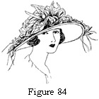FLOWERS FOR THE GARDEN HAT
Figure 84. Straw Garden Hat with Wreath Trimming and Crepe Underfacing.
Flower manufacturing has reached a high degree of perfection within the last ten years. Morning-glories, nasturtiums, fuchsias, sweet peas, camelias, dahlias, wistaria, and hosts of other flowers are copied with absolute fidelity to form and color.
Not content with following the colors used by nature, the designers and dye makers go further and give us blue roses and pink lilies-of-the-valley. These are often so artistic in their conception and so satisfactory in effect that the divergence from authentic coloring is not objectionable.
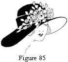Many beautiful wreaths and sprays may be purchased ready-made, but the same effects may be obtained at much less cost when a little taste and care is used in the making of a wreath.
Figure 85. Garden Hat with Front Trimming of French Flowers.
Colors and flowers chosen to match or harmonize with hat and frock make a much more pleasing completed costume than can be had in a combination wreath which is made of flowers and colors selected at random.
There is no more picturesque hat for wear with organdie, lace, and linen frocks than the garden hat. Large, floppy, straw-body hats laden with flowers lend color and atmosphere to summer costumes.
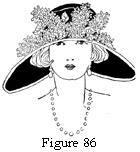These body hats may be purchased untrimmed in any good department or millinery store. Facings or bindings of georgette, organdie, velvet, or taffeta make a more finished-looking hat and give an opportunity for the use of color.
Figure 86. Dress Hat of Black Satin with White Top Brim and Trimming of White Lilacs.
A black garden hat may have a wreath of buttercups, green, yellow, and blue wheat, yellow and blue berries, and green and rose apples. If the wreath is tied with dull blue ribbon and the hat faced in either green, blue, or rose, it may be worn with almost any costume. It is lovely worn with any one of its own colors.
If you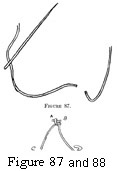 watch flower coloring you will see that almost any, or all, colors in the spectrum may be combined if they are used in the correct shades and proportions.
Figures 87 and 88. Figures 87 and 88 show the detail of the tie-tack stitch used for tacking flowers and feathers. Stems are sewn with ordinary stitches. The sprays and feathers are caught loosely with a tie-tack stitch.
ELABORATE OSTRICH TRIMMINGS
When a hat is to be made with an elaborate ostrich trimming it is easier to adapt the hat to the ostrich than vice versa. This does not mean ostrich heads or quills or plain bands, for they may be adapted to a hat; but the more elaborate ostrich bands and crowns. These come in a variety of shapes, styles, and colors.
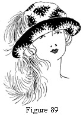When they are used, the designer tries the feathers on various frames, and if none is completely harmonious, shapes a frame to make it a fitting background for the feathers as well as becoming to the individual.
Figure 89. Hat Designed to Fit the Ostrich Trimming.
PARADISE
Paradise and aigrettes are the most beautiful of all feathers but they are procured in a manner so barbaric that it is inconceivable that any well-bred woman would want them.
Since 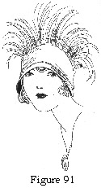there 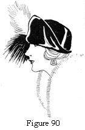is no accounting for tastes, their use must be given space. These feathers are so elaborate in themselves that ordinarily a plain hat with style of line is the best to use for them (see Figure 90).
Figure 90. Hat Designed for Trimming of Aigrettes.
Figure 91. Hat Designed in Rust Faille for a Band of Dull Henna Aigrettes.
For aigrettes, a draped turban with smooth, smart lines, or an irregular turned-up brim of soft lines is the best background. These shapes are becoming to most people.
For paradise birds (which in themselves are showy but not pretty or artistic), a large-brim hat is necessary.
Sprays of paradise feathers, without a head, are as beautiful as their source is cruel. Our feminine vanity and love of the beautiful, together with a faculty for shutting our eyes to the disagreeable, is what has kept them on the market.
Paradise sprays may be used on small or medium-large rolled-brim hats, tiny sailors, and turbans.
BURNT GOOSE
Burnt goose comes in a variety of elaborate forms.
1. Bands are shaped in circles for the edges of mushroom or upturned brims. It is seldom that a frame exactly fits such a band. The band may be slashed and lapped slightly or the frame may be cut to fit the band.
Other bands are really frames in themselves and need only have edge folds, crowns, and facings added to have finished hats.
2. Fancies. Burnt-goose fancies are made on shaped forms to give aigrette-like effects.
Small brims, irregular, medium-sized brims, and a variety of large brims and turbans are used as background for these feathers.
3. Entire crowns of burnt goose give a variety of lovely effects. These come already made in a variety of shapes and colors. Brims of straw cloth, satin, velvet, or taffeta are used to mount these crowns.
ELABORATE COQ
Coq makes very handsome small hats for girls and matrons, and dignified, handsome, brim hats for matrons.
1. Bands. Bands of coq are for side crowns only. The feathers are too long for brim bands except where other feathers are used for the edge.
2. Fancies. Coq fancies are much favored by the French designers and make smart, small hats. A small hat with an elaborate use of coq is very smart, if not pretty, and highly suited for what is called a dressy street hat.
3. Crowns. Crowns of coq are made on plain molds for turbans and on small brims for matron hats.
For more elaborate dress hats these crowns come with long coq tails attached at side or back, or with smaller coq fancies at the side or front.
II. TRIMMING WHICH IS PART OF THE DESIGN
This is the type of trimming used for ninety per cent of the hats of today.
Ten or fifteen years ago most of the hats worn were factory made (often of fine quality) of straw or velvet. All that the milliner needed to do was to sew on trimming, which might be elaborate or simple, according to the quality and quantity desired.
Today most of the design of the hat is in the making. Trimming is only a small part of the design.
FLOWERS
1. Single flowers. Single flowers are used as a finish to dress and semidress hats.
Rose. Roses are often so beautifully made that to use just one is artistic perfection. A single rose may be posed at the side of a soft tam crown; it may be used on the edge of a shirred fold on a large brim; it may catch in the velvet or fabric drape of a matron's turban; be caught to the bandeau of a Watteau hat; or be nestled in the lace facing of a baby's hat.
Gardenia. Gardenias are conventional in shape and appropriate for the more or less severe midsummer hats of taffeta and hair. A gardenia at the side of a soft crown or at the right-side front of a brim edge is both smart and pretty.
Handmade flower. The handmade flower is essentially a part of the design of fabric and straw hats. Most of the good-looking
handmade flowers for hats are flat. Large handmade flowers are for dresses, not millinery. Patterns and directions for making are always given with the hat pattern.
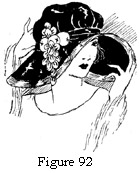2. Sprays of flowers. Sprays of flowers may be used around a top crown; around a side crown; across the back of a brim; on the facing of an upturned brim; at the headsize of a brim which is turned up in the back; or on the brim of a large dress hat (see Figure 92).
Figure 92. Handmade Spray on a Large Dress Hat.
Rose sprays. These are usually of small roses or of a mixture of a few large and a number of small roses. Midwinter dress hats and spring and summer straw and hair hats are frequently trimmed with rose sprays. Leghorn and roses seem always a happy summer combination.
Facings usually match frocks and roses in color.
Mixed sprays. The better flowers which are made into mixed sprays usually have one or more large flowers in the center and a spray of smaller flowers extending out on each side. The large flowers serve as balance to the arrangement and to hide the stem ends of smaller flowers.
In making these sprays, assemble two small sprays which are a pair. Cut the extra stem ends off. Join the ends of the two sprays together and fasten the larger flowers, or flower, over the joining.
Metallic flowers. Metallic flowers are used to trim late fall and early winter dress hats of velvet brocade, satin, and tinsel cloth. These come already arranged in sprays.
More elaborate sprays may be made like the mixed sprays, as directed in the paragraph above. Grapes, roses, berries, and small flowers are used with a few thistles, roses, poppies, and unknown flowers.
Handmade sprays and wreaths. Handmade flowers may be used for either sprays or wreaths.
Instead of being made into wreaths or sprays and sewed onto the hat, they are sewed onto the hat separately in a wreath foundation. This is because extra stemming, such as ready-made flowers have, would make the hat heavy and give extra work which has no value. Patterns and directions for handmade sprays and wreaths are given on all hat patterns where they are used.
FEATHERS
Feathers are often used on dress hats to give point to the design of the hat.
1. Ostrich heads. Ostrich heads, correctly posed, may be made the most sophisticated finish for the design of a dress hat. An ostrich head is the head or tip end of a full ostrich plume.
Rain-proof finishes have been so perfected that ostrich feathers are now more satisfactory than ever.
Blended shades of ostrich used on a velvet hat of two tones is artistically satisfying.
For example, a Gainsborough hat may be of violet velvet faced in wistaria and trimmed in two ostrich heads the fibers of which are dyed blue and wistaria.
There is no more artistic trim for the large, black hat than clustered ostrich heads; not huge, sweeping, willow plumes, but graceful, nodding ostrich heads.
2. Paradise. Small sprays of paradise may droop gracefully
from the folds of a draped turban to give a wide, soft frame for the face.
In a picture hat they accentuate the sweeping line of a wide brim.
In a medium brim with curves they have all the grace of the old cavaliers' hats.
3. Aigrettes. Aigrettes make the finishing trim on draped and semidraped hats of velvet, satin, hair, haircloth, tinsel cloth, and brocade.
The hats may be turbans or have large or medium brims.
4. Fancies made of ostrich fiber, as:
Bands. Ostrich is sewed and glued onto shaped bands to make trimming for dress hats. These come in bow shapes, in crescent shapes to fit into the curve of a brim, and in rosette shapes.
Flowers. Ostrich flowers are usually round in shape, giving a morning-glory or rose effect. They make soft, unusual trimming finishes for the large hats of exaggerated shape and style.
EMBROIDERIES
Embroidery of every sort has been, and is still very popular for dress hats. It is fundamentally part of the design of the hat. Entire crowns and entire facings are solidly embroidered.
1. Silk floss. Embroidery floss is seldom used alone to make the embroidery on a hat. It is used in combination with nail heads, bugle beads, wooden beads, chenille, tinsel thread, or ribbonzene.
2. Appliqué 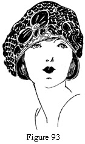materials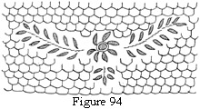 in design. Appliqué in elaborate designs of conventional lines in Chinese-embroidery motifs or in intricate, all-over patterns makes handsome dress hats.
Duvetyn and suede cloth, velvet, broadcloth, and heavy silks are used for this. The edges are finished with couching or blanket stitching of embroidery floss, yarn, or tinsel.
Beaver cloth is used in appliqué design on felt hats. The edge is caught down with yarn, chenille, or beads in harmonizing color.
Figure 93. Design Showing Applique of Fabric and Honeycomb Design of Ribbonzene.
Figure 94. Figure 94 shows the stitches for honeycomb all-over embroidery.
3. Ribbonzene. Ribbonzene is used alone in honeycomb, all-over designs and in combination with crêpe folds, tinsel braid, chenille, yarn, and floss.
4. Tinsel thread. Tinsel embroidery thread imparts richness of color as well as design. It is rarely used alone but combined with floss, ribbonzene, Chinese embroidery, medallions, Chinese gold twist, tinsel ribbon, or beads.
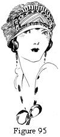Figure 95. Chinese Embroidery in an Appliquéd Design on the Front of a Turban.
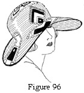Figure 96. Applique Cut from Vari-colored Velvet for a Straw Hat.
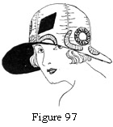Figure 97. Cut-out Design from Printed Silk for a Fabric Hat.
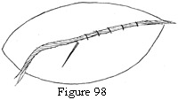Figure 98. The Couching Embroidery Stitch Used for Much of the Applique Embroidery. A heavier floss, ribbonzene, or yarn is couched on the applique edge with a floss thread.
5. Tinsel-ribbon embroidery. Tinsel ribbons are made in lovely designs of solid tinsel and in combination with colored silk or fiber.
These ribbons laid flat on the hat and caught at curve or turn by tinsel thread make rich and lovely effects.
Solid turbans and facings are embroidered in conventional line and flower designs of these ribbons.
6. Tinted ribbon. Ribbon woven with plain or scalloped edges and tinted in two or more shades makes lovely floral designs.
An easy method is to cut a conventional rose stencil, mark the pattern on the hat, and outline and fill in to the center with shirred rows of tinted ribbon.
QUESTIONS
- How are the two major divisions of dress-hat trimmings made?
- Give the uses for and types named of ostrich trimming.
- Make two sprays of handmade flowers.
- Make two wreaths of artificial flowers. It is a good idea for this to be done in connection with the lesson on cleaning and dyeing. Old flowers or cheap new flowers may be used.
- How is a hat designed for an elaborate feather band or brim?
- Name two admirable trimmings for matrons' hats.
- How may a garden hat be made to blend artistically with many dresses?
- How is tinsel ribbon used in embroidery?
- How is appliqué embroidery finished?
- What are the best appliqué materials?
- Make two doll hats with original embroidery design.
- What is the evil, if any, of using aigrettes?
Note to instructor: This may be made an educative point because women are largely unconscious of their part in the aigrette industry.